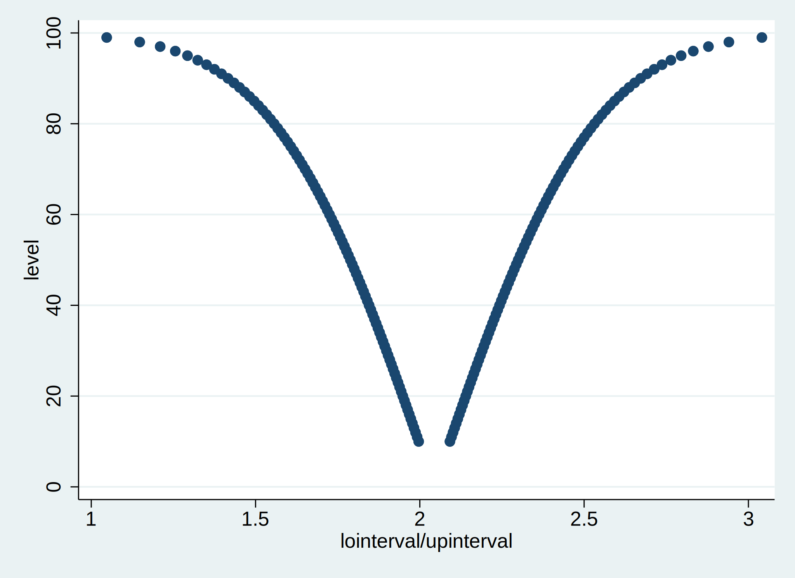

Code
sysuse auto2
#> . sysuse auto2
#> (1978 automobile data)
#>
#> .sensitivity analysis, tipping point analysis, uncertainty analysis, robust analysis, multiverse analysis, exploring assumptions, bias analysis
Although concurve was originally designed to be used in R, it is possible to achieve very similar results in Stata. We can use some datasets that are built into Stata to show how to achieve this. I’ll use the Statamarkdown R package so that I can obtain Stata outputs using RMarkdown via my Stata 16 package.
First, let’s load the auto2 dataset which contains data about cars and their characteristics.
sysuse auto2
#> . sysuse auto2
#> (1978 automobile data)
#>
#> .Browse the data set in your data browser to get more familiar with some of the variables. Let’s say we’re interested in the relationship between miles per gallon and price. We could fit a very simple linear model to assess that relationship.
First, let’s visualize the data with a scatter plot.
sysuse auto2
#> . sysuse auto2
#> (1978 automobile data)
#>
#> . scatter price mpg, mcolor(dkorange) scale( 0.70)
#>
#> . graph export "scatter.svg", replace
#> file scatter.svg saved as SVG format
#>
#> .
That’s what our data looks like. Clearly there seems to be an inverse relationship between miles per gallon and price.
Now we could fit a very simple linear model with miles per gallon being the predictor and price being the outcome and get some estimates of the relationship.
sysuse auto2
#> . sysuse auto2
#> (1978 automobile data)
#>
#> . regress price mpg
#>
#> Source | SS df MS Number of obs = 74
#> -------------+---------------------------------- F(1, 72) = 20.26
#> Model | 139449474 1 139449474 Prob > F = 0.0000
#> Residual | 495615923 72 6883554.48 R-squared = 0.2196
#> -------------+---------------------------------- Adj R-squared = 0.2087
#> Total | 635065396 73 8699525.97 Root MSE = 2623.7
#>
#> ------------------------------------------------------------------------------
#> price | Coefficient Std. err. t P>|t| [95% conf. interval]
#> -------------+----------------------------------------------------------------
#> mpg | -238.8943 53.07669 -4.50 0.000 -344.7008 -133.0879
#> _cons | 11253.06 1170.813 9.61 0.000 8919.088 13587.03
#> ------------------------------------------------------------------------------
#>
#> .That’s what our output looks like.
Our output also gives us 95% consonance (confidence) intervals by default. But suppose we wished to fit a fractional polynomial model and graph it and get the confidence bands, here’s what we would do.
sysuse auto2
#> . sysuse auto2
#> (1978 automobile data)
#>
#> . mfp: glm price mpg
#>
#> Deviance for model with all terms untransformed = 1373.079, 74 observations
#>
#> Variable Model (vs.) Deviance Dev diff. P Powers (vs.)
#> ----------------------------------------------------------------------
#> mpg Lin. FP2 1373.079 19.565 0.000+ 1 -2 -2
#> FP1 1356.927 3.413 0.182 -2
#> Final 1356.927 -2
#>
#>
#> Transformations of covariates:
#>
#> -> gen double Impg__1 = X^-2-.2204707671 if e(sample)
#> (where: X = mpg/10)
#>
#> Final multivariable fractional polynomial model for price
#> --------------------------------------------------------------------
#> Variable | -----Initial----- -----Final-----
#> | df Select Alpha Status df Powers
#> -------------+------------------------------------------------------
#> mpg | 4 1.0000 0.0500 in 2 -2
#> --------------------------------------------------------------------
#>
#> Generalized linear models Number of obs = 74
#> Optimization : ML Residual df = 72
#> Scale parameter = 5533697
#> Deviance = 398426217.4 (1/df) Deviance = 5533697
#> Pearson = 398426217.4 (1/df) Pearson = 5533697
#>
#> Variance function: V(u) = 1 [Gaussian]
#> Link function : g(u) = u [Identity]
#>
#> AIC = 18.3909
#> Log likelihood = -678.4632599 BIC = 3.98e+08
#>
#> ------------------------------------------------------------------------------
#> | OIM
#> price | Coefficient std. err. z P>|z| [95% conf. interval]
#> -------------+----------------------------------------------------------------
#> Impg__1 | 13163.85 2013.016 6.54 0.000 9218.41 17109.29
#> _cons | 5538.395 289.7737 19.11 0.000 4970.449 6106.341
#> ------------------------------------------------------------------------------
#> Deviance = 1356.927.
#>
#> . twoway (fpfitci price mpg, estcmd(glm) fcolor(dkorange%20) alcolor(%40)) || scatter pri
#> > ce mpg, mcolor(dkorange) scale(0.75)
#>
#> . graph export "mfp.svg", replace
#> file mfp.svg saved as SVG format
#>
#> .That’s what our model looks graphed.


Now suppose we got a single estimate (point or interval) for a parameter, and we wanted all the intervals for it at every level.
Here’s the code that we’ll be using to achieve that in Stata.
That’s a lot and may seem intimidating at first, but I’ll explain it line by line.
postfile topost level pvalue svalue lointerval upinterval using my_new_data, replace
#> . postfile topost level pvalue svalue lointerval upinterval using my_new_data, replace
#>
#> .“postfile” is the command that will be responsible for pasting the data from our overall loop into a new dataset. Here, we are telling Stata that the internal Stata memory used to hold these results (the post) will be named “topost” and that it will have five variables, “level”, “pvalue”, “svalue”, “lointerval”, and “upinterval.”
“level” will contain the consonance level that corresponds to the limits of the interval, with “lointerval” being the lower bound of the interval and “upinterval” being the upper bound.
“pvalue”is computed by taking 1 - “level”, which is alpha.
“svalue”is computed by taking the \(-log_{2}\) of the computed P-value, and this column will be used to plot the surprisal function.
“my_new_data” is the filename that we’ve assigned to our new dataset.
“replace” indicates that if there is an existing filename that already exists, we’re willing to relace it.
Here are the next few major lines
forvalues i = 10/99.9 { The command “forvalues” is responsible for taking a set of numbers that we provide it, and running the contents within the braces through those numbers. So here, we’ve set the local macro “i” to contain numbers between 10 and 99.99 for our consonance levels. Why 10? Stata cannot compute consonance intervals lower than 10%.
Our next line contains the actual contents of what we want to do. Here, it says that we will run a simple linear regression where mpg is the predictor and where price is the outcome, and that the outputs for each loop will be suppressed, hence the “quiet.”
Then, we have the command “level” with the local macro “i” inside of it. As you may already know, “level” dictates the consonance level that Stata provides us. By default, this is set to 95%, but here, we’ve set it “i”, which we established via “forvalues” as being set to numbers between 10 and 99.
The next line two lines
matrix E = r(table)
matrix list E
#> . matrix E = r(table)
#>
#> . matrix list E
#>
#> symmetric E[1,1]
#> c1
#> r1 .
#>
#> .indicate that we will take variables of a certain class r(), (this class contains the interval bounds we need) and place them within a matrix called E. Then we will list the contents of this matrix.
post topost (`i') (1-`i'/100) ( ln(1-`i'/100)/ln(2) * -1) (E[5,1]) (E[6,1])
#> . post topost (`i') (1-`i'/100) ( ln(1-`i'/100)/ln(2) * -1) (E[5,1]) (E[6,1])
#> post topost not found
#> r(111);
#>
#> r(111);From the contents of this matrix list, we will take the estimates from the fifth and sixth rows (look at the last two paranthesis of this line of code above and then the image below) in the first column which contain our consonance limits, with the fifth row containing the lower bound of the interval and the sixth containing the upper bound.

We will place the contents from the fifth row into the second variable we set originally for our new dataset, which was “lointerval.” The contents of the sixth row will be placed into “upinterval.”
All potential values of “i” (10-99) will be placed into the first variable that we set, “level”. From this first variable, we can compute the second variable we set up, which was “Pvalue” and we’ve done that here by subtracting “level” from 1 and then dividing the whole equation by 100, so that our P-value can be on the proper scale. Our third variable, which is the longest, computes the “Svalue” by using the previous variable, the “Pvalue” and taking the \(-log_{2}\) of it.
The relationships between the variables on this line and the variables we set up in the very first line are dictated by the order of the commands we have set, and therefore they correspond to the same order.
“post topost” is writing the results from each loop as new observations in this data structure.
With that, our loop has concluded, and we can now tell Stata that “post” is no longer needed
postclose topostWe then tell Stata to clear its memory to make room for the new dataset we just created and we can list the contents of this new dataset.
use my_new_data, clear
listNow we have an actual dataset with all the consonance intervals at all the levels we wanted, ranging from 10% all the way up to 99%.
In order to get a function, we’ll need to be able to graph these results, and that can be tricky since for each observation we have one y value (the consonance level), and two x values, the lower bound of the interval and the upper bound of the interval.
So a typical scatterplot will not work, since Stata will only accept one x value. To bypass this, we’ll have to use a paired-coordinate scatterplot which will allow us to plot two different y variables and two different x variables.
Of course, we don’t need two y variables, so we can set both options to the variable “level”, and then we can set our first x variable to “lointerval” and the second x variable to “upinterval.”
This can all be done with the following commands, which will also allow us to set the title and subtitle of the graph, along with the titles of the axes.
twoway (pcscatter level lointerval level upinterval),
#> . twoway (pcscatter level lointerval level upinterval),
#> variable level not found
#> r(111);
#>
#> r(111);However, I would recommend using the menu to customize the plots as much as possible. Simply go to the Graphics menu and select Twoway Graphs. Then create a new plot definition, and select the Advanced plots and choose a paired coordinate scatterplot and fill in the y variables, both of which will be “levels” and the x variables, which will be “lointerval” and “upinterval”.

So now, here’s what our confidence/consonance function looks like.
clear
sysuse auto2
postfile topost level pvalue svalue lointerval upinterval using my_new_data, replace
forvalues i = 10/99.9 {
quietly regress price weight, level(`i')
matrix E = r(table)
matrix list E
post topost (`i') (1-`i'/100) ( ln(1-`i'/100)/ln(2) * -1) (E[5,1]) (E[6,1])
}
postclose topost
use my_new_data, clear
twoway (pcscatter pvalue lointerval pvalue upinterval, mcolor(maroon)), ytitle(Consonance Level (%)) xtitle(Consonance Limits) scale(0.75) ///
title(Consonance Curve) subtitle(A function comprised of several consonance intervals at various levels.)
graph export "confidence.svg", replace
Pretty neat, eh? And below is what our surprisal function looks like, which is simply the \(-\log_{2}\)(p) transformation of the observed P-value. For a more comprehensive discussion on surprisals, see this page and check out some of the references at the bottom.
clear
sysuse auto2
postfile topost level pvalue svalue lointerval upinterval using my_new_data, replace
forvalues i = 10/99.9 {
quietly regress price weight, level(`i')
matrix E = r(table)
matrix list E
post topost (`i') (1-`i'/100) ( ln(1-`i'/100)/ln(2) * -1) (E[5,1]) (E[6,1])
}
postclose topost
use my_new_data, clear
twoway (pcscatter svalue lointerval svalue upinterval, mcolor(maroon)), ytitle(Consonance Level (%)) xtitle(Consonance Limits) scale( 0.75) ///
title(Surprisal Curve) subtitle(A function comprised of several consonance intervals at various levels.)
graph export "surprisal.svg", replace
It’s clear that in both plots, we’re missing values of intervals with a confidence/consonance level of less than 10%, but unfortunately, this is the best Stata can do, and what we’ll have to work with. It may not look as pretty as an output from R, but it’s far more useful than blankly staring at a 95% interval and thinking that it is the only piece of information we have regarding compatibility of different effect estimates.
The code that I have pasted above can be used for most commands in Stata that have an option to calculate a consonance level. Thus, if there’s an option for “level”, then the commands above will work to produce a data set of several consonance intervals. Though I am seriously hoping that a Stata expert will see this post and point out how I am wrong.
Now, suppose we wished to fit a generalized linear model, here’s what our code would look like.
clear
sysuse auto2
postfile topost level pvalue svalue lointerval upinterval using my_new_data, replace
forvalues i = 10/99.9 {
quietly glm price mpg, level(`i')
matrix E = r(table)
matrix list E
post topost (`i') (1-`i'/100) ( ln(1-`i'/100)/ln(2) * -1) (E[5,1]) (E[6,1])
}
postclose topost
use my_new_data, clear
list
twoway (pcscatter level lointerval level upinterval),
ytitle(Confidence Level (%)) xtitle(Confidence Limits) ///
title(Consonance Curve)
subtitle(A function comprised of several consonance intervals at various levels.)We simply replace the first line within the loop with our intended command, just as I’ve replaced
regress price mpg
#> . regress price mpg
#> no variables defined
#> r(111);
#>
#> r(111);with
glm price mpg
#> . glm price mpg
#> variable price not found
#> r(111);
#>
#> r(111);If we wanted fit something more complex, like a multilevel mixed model that used restricted maximum likelihood, here’s what our code would look like:
clear
sysuse auto2
postfile topost level pvalue svalue lointerval upinterval using my_new_data, replace
forvalues i = 10/99.9 {
quietly mixed outcome predictor, reml level(`i')
matrix E = r(table)
matrix list E
post topost (`i') (1-`i'/100) ( ln(1-`i'/100)/ln(2) * -1) (E[5,1]) (E[6,1])
}
postclose topost
use my_new_data, clear
list
twoway (pcscatter level lointerval level upinterval),
ytitle(Confidence Level (%)) xtitle(Confidence Limits) ///
title(Consonance Curve)
subtitle(A function comprised of several consonance intervals at various levels.)Basically, our code doesn’t really change that much and with only a few lines of it, we are able to produce graphical tools that can better help us interpret the wide range of effect sizes that are compatible with the model and its assumptions.
It is also important to cite the statistical packages that we have used here, as always.
citation("Statamarkdown")
#> To cite package 'Statamarkdown' in publications use:
#>
#> Hemken D (2025). _Statamarkdown: 'Stata' Markdown_.
#> doi:10.32614/CRAN.package.Statamarkdown
#> <https://doi.org/10.32614/CRAN.package.Statamarkdown>, R package
#> version 0.9.4, <https://CRAN.R-project.org/package=Statamarkdown>.
#>
#> A BibTeX entry for LaTeX users is
#>
#> @Manual{,
#> title = {Statamarkdown: 'Stata' Markdown},
#> author = {Doug Hemken},
#> year = {2025},
#> note = {R package version 0.9.4},
#> url = {https://CRAN.R-project.org/package=Statamarkdown},
#> doi = {10.32614/CRAN.package.Statamarkdown},
#> }#> R version 4.5.0 (2025-04-11)
#> Platform: aarch64-apple-darwin20
#> Running under: macOS Sequoia 15.6.1
#>
#> Matrix products: default
#> BLAS: /Library/Frameworks/R.framework/Versions/4.5-arm64/Resources/lib/libRblas.0.dylib
#> LAPACK: /Library/Frameworks/R.framework/Versions/4.5-arm64/Resources/lib/libRlapack.dylib; LAPACK version 3.12.1
#>
#> locale:
#> [1] en_US.UTF-8/en_US.UTF-8/en_US.UTF-8/C/en_US.UTF-8/en_US.UTF-8
#>
#> time zone: America/New_York
#> tzcode source: internal
#>
#> attached base packages:
#> [1] splines grid stats4 parallel stats graphics grDevices
#> [8] utils datasets methods base
#>
#> other attached packages:
#> [1] cli_3.6.5 texPreview_2.1.0 tinytex_0.57
#> [4] rmarkdown_2.29 brms_2.22.0 bootImpute_1.2.2
#> [7] knitr_1.50 boot_1.3-32 gtsummary_2.4.0
#> [10] reshape2_1.4.4 ProfileLikelihood_1.3 ImputeRobust_1.3-1
#> [13] gamlss_5.5-0 gamlss.dist_6.1-1 gamlss.data_6.0-7
#> [16] mvtnorm_1.3-3 performance_0.15.1 summarytools_1.1.4
#> [19] tidybayes_3.0.7 htmltools_0.5.8.1 Statamarkdown_0.9.4
#> [22] car_3.1-3 carData_3.0-5 qqplotr_0.0.7
#> [25] ggcorrplot_0.1.4.1 mitml_0.4-5 pbmcapply_1.5.1
#> [28] Amelia_1.8.3 Rcpp_1.1.0 blogdown_1.21
#> [31] doParallel_1.0.17 iterators_1.0.14 foreach_1.5.2
#> [34] lattice_0.22-7 bayesplot_1.14.0 wesanderson_0.3.7
#> [37] VIM_6.2.2 colorspace_2.1-1 here_1.0.1
#> [40] progress_1.2.3 loo_2.8.0 mi_1.2
#> [43] Matrix_1.7-4 broom_1.0.9 yardstick_1.3.2
#> [46] svglite_2.2.1 Cairo_1.6-5 cowplot_1.2.0
#> [49] mgcv_1.9-3 nlme_3.1-168 xfun_0.53
#> [52] broom.mixed_0.2.9.6 reticulate_1.43.0 kableExtra_1.4.0
#> [55] posterior_1.6.1 checkmate_2.3.3 parallelly_1.45.1
#> [58] miceFast_0.8.5 randomForest_4.7-1.2 missForest_1.5
#> [61] miceadds_3.17-44 quantreg_6.1 SparseM_1.84-2
#> [64] MCMCpack_1.7-1 MASS_7.3-65 coda_0.19-4.1
#> [67] latex2exp_0.9.6 rstan_2.32.7 StanHeaders_2.32.10
#> [70] lubridate_1.9.4 forcats_1.0.0 stringr_1.5.1
#> [73] dplyr_1.1.4 purrr_1.1.0 readr_2.1.5
#> [76] tibble_3.3.0 ggplot2_3.5.2 tidyverse_2.0.0
#> [79] ggtext_0.1.2 concurve_2.7.7 showtext_0.9-7
#> [82] showtextdb_3.0 sysfonts_0.8.9 future.apply_1.20.0
#> [85] future_1.67.0 tidyr_1.3.1 magrittr_2.0.3
#> [88] mice_3.18.0 rms_8.0-0 Hmisc_5.2-3
#>
#> loaded via a namespace (and not attached):
#> [1] dichromat_2.0-0.1 nnet_7.3-20 TH.data_1.1-4
#> [4] vctrs_0.6.5 digest_0.6.37 png_0.1-8
#> [7] shape_1.4.6.1 proxy_0.4-27 magick_2.8.7
#> [10] fontLiberation_0.1.0 withr_3.0.2 ggpubr_0.6.1
#> [13] survival_3.8-3 doRNG_1.8.6.2 MatrixModels_0.5-4
#> [16] emmeans_1.11.2-8 systemfonts_1.2.3 ragg_1.5.0
#> [19] zoo_1.8-14 V8_7.0.0 ggdist_3.3.3
#> [22] DEoptimR_1.1-4 Formula_1.2-5 prettyunits_1.2.0
#> [25] rematch2_2.1.2 httr_1.4.7 rstatix_0.7.2
#> [28] globals_0.18.0 ps_1.9.1 rstudioapi_0.17.1
#> [31] extremevalues_2.4.1 pan_1.9 generics_0.1.4
#> [34] processx_3.8.6 base64enc_0.1-3 curl_7.0.0
#> [37] mitools_2.4 desc_1.4.3 xtable_1.8-4
#> [40] svUnit_1.0.8 pracma_2.4.4 evaluate_1.0.5
#> [43] hms_1.1.3 glmnet_4.1-10 rcartocolor_2.1.2
#> [46] lmtest_0.9-40 robustbase_0.99-6 matrixStats_1.5.0
#> [49] svgPanZoom_0.3.4 class_7.3-23 pillar_1.11.0
#> [52] caTools_1.18.3 compiler_4.5.0 stringi_1.8.7
#> [55] jomo_2.7-6 minqa_1.2.8 plyr_1.8.9
#> [58] crayon_1.5.3 abind_1.4-8 metadat_1.4-0
#> [61] sp_2.2-0 mathjaxr_1.8-0 rapportools_1.2
#> [64] twosamples_2.0.1 sandwich_3.1-1 whisker_0.4.1
#> [67] codetools_0.2-20 multcomp_1.4-28 textshaping_1.0.3
#> [70] bcaboot_0.2-3 openssl_2.3.3 flextable_0.9.10
#> [73] QuickJSR_1.8.0 e1071_1.7-16 gridtext_0.1.5
#> [76] lme4_1.1-37 fs_1.6.6 itertools_0.1-3
#> [79] listenv_0.9.1 Rdpack_2.6.4 pkgbuild_1.4.8
#> [82] ggsignif_0.6.4 estimability_1.5.1 callr_3.7.6
#> [85] tzdb_0.5.0 pkgconfig_2.0.3 tools_4.5.0
#> [88] rbibutils_2.3 viridisLite_0.4.2 DBI_1.2.3
#> [91] numDeriv_2016.8-1.1 fastmap_1.2.0 scales_1.4.0
#> [94] officer_0.7.0 opdisDownsampling_1.0.1 insight_1.4.2
#> [97] rpart_4.1.24 farver_2.1.2 reformulas_0.4.1
#> [100] survminer_0.5.1 yaml_2.3.10 foreign_0.8-90
#> [103] lifecycle_1.0.4 askpass_1.2.1 backports_1.5.0
#> [106] Brobdingnag_1.2-9 timechange_0.3.0 gtable_0.3.6
#> [109] arrayhelpers_1.1-0 metafor_4.8-0 jsonlite_2.0.0
#> [112] bitops_1.0-9 qqconf_1.3.2 zip_2.3.3
#> [115] ranger_0.17.0 RcppParallel_5.1.11-1 polspline_1.1.25
#> [118] bridgesampling_1.1-2 survMisc_0.5.6 distributional_0.5.0
#> [121] pander_0.6.6 details_0.4.0 KMsurv_0.1-6
#> [124] formatR_1.14 glue_1.8.0 tcltk_4.5.0
#> [127] gdtools_0.4.3 rprojroot_2.1.1 mcmc_0.9-8
#> [130] gridExtra_2.3 R6_2.6.1 arm_1.14-4
#> [133] km.ci_0.5-6 vcd_1.4-13 clipr_0.8.0
#> [136] cluster_2.1.8.1 rngtools_1.5.2 nloptr_2.2.1
#> [139] rstantools_2.5.0 tidyselect_1.2.1 htmlTable_2.4.3
#> [142] tensorA_0.36.2.1 xml2_1.4.0 inline_0.3.21
#> [145] fontBitstreamVera_0.1.1 furrr_0.3.1 laeken_0.5.3
#> [148] pryr_0.1.6 fontquiver_0.2.1 data.table_1.17.8
#> [151] htmlwidgets_1.6.4 RColorBrewer_1.1-3 rlang_1.1.6
#> [154] uuid_1.2-1